CityNet :> Home :> Business Directory
[#]Lost Hills Business Directory
A chamber-of-commerce listing of businesses, civic partners, and public-facing offices in Lost Hills. Listings are restored from backup; the «Archive Note» field was added during a later digitization pass and may differ from the original printed directory.
FOR THE PUBLIC
New listings or corrections may be filed at the Clerk's Office
during posted hours. Listing in the directory does not constitute a municipal endorsement.
// storefront photos: click image to view full archive copy — citynet03 photo viewer
Selected Storefronts (1992–1993 photo file)
// silver_dream_marquee.jpg · downtown Main St., the Silver Dream marquee
[ view full image ]
// noise_records_main_st.jpg · new & used vinyl, cassettes, CDs, consignment
[ view full image ]
// megabyte_tech_pine_st.jpg · computers & modems, public access program partner
[ view full image ]
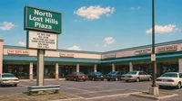
// north_lost_hills_plaza.jpg · anchor tenants: Fat Boys Subs, Saigon Sisters, Auto World
[ view full image ]
// nwib_east_plaza.jpg · Northwestern Interstate Bank, 24-hour ATM lobby
[ view full image ]
// benthic_catfish_lake_rd.jpg · Benthic, 24 hr · photographer not recorded
[ view full image ]
// sezzler_main_entrance.jpg · Sezzler Conference Resort, main entry
[ view full image ]
// mofa_corridor_sculpture.jpg · MOFA exterior with Corridor sculpture
[ view full image ]
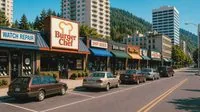
// main_st_downtown_1992.jpg · Main St. looking north · Ship Quick, Burger Chef, Book Haven
[ view full image ]
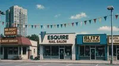
// east_side_retail_1992.jpg · east side commercial strip · mixed retail, two storefronts not in directory
[ view full image ]
// nwib_branch_1992.jpg · Northwestern Interstate Bank, east branch · 24-hour ATM · branch status unknown
[ view full image ]
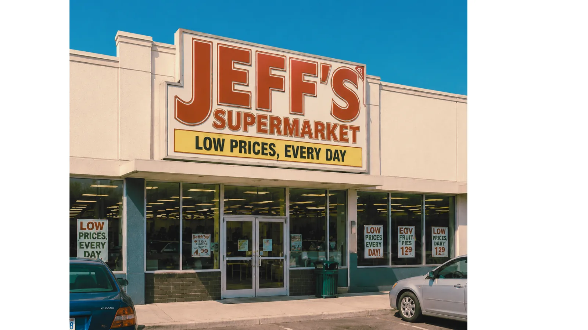
// jeffs_supermarket_northplaza.png · Jeff's, North Plaza · grocery & pharmacy
[ view full image ]
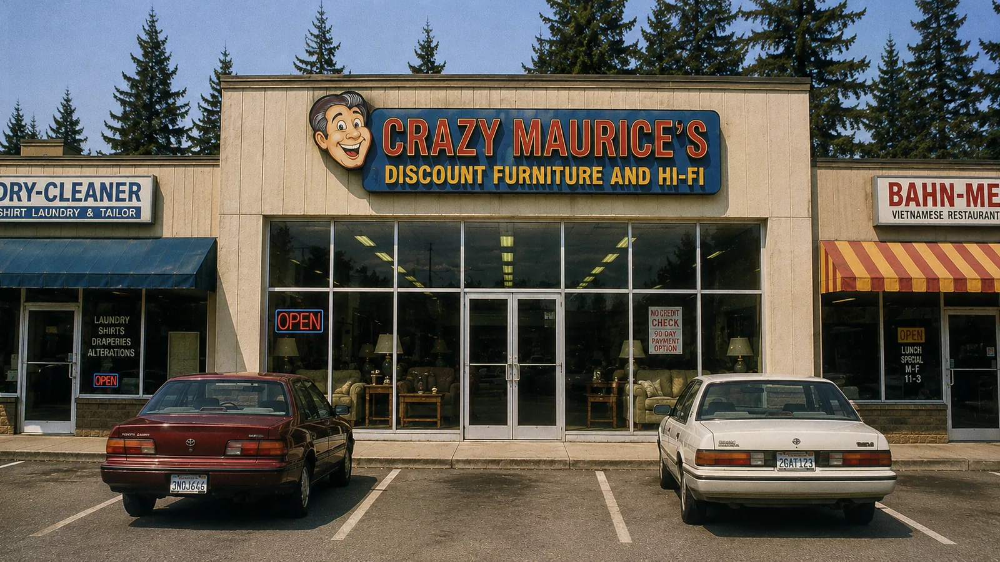
// crazy_maurices_electronics.png · Crazy Maurice's · East Plaza
[ view full image ]
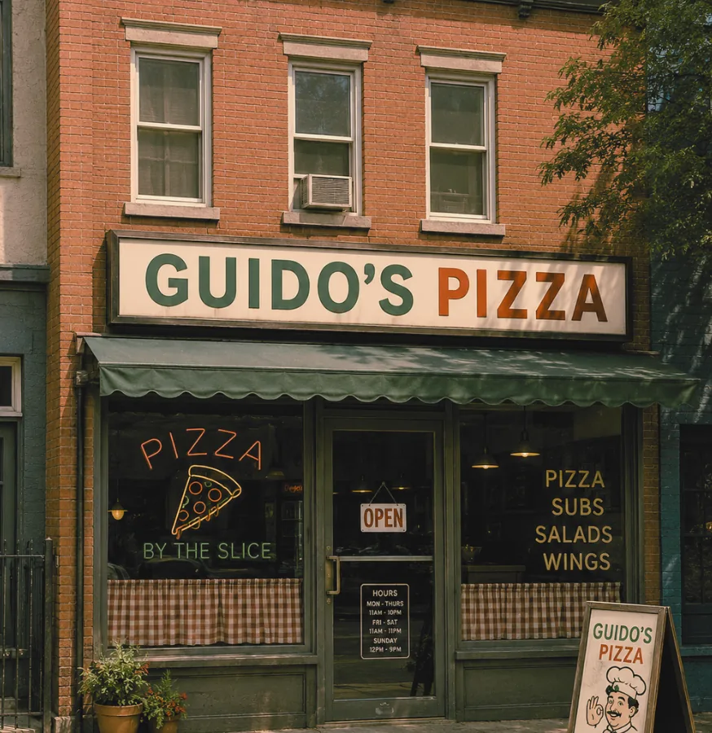
// guidos_pizza_downtown.png · Guido's Pizza · dine-in & delivery
[ view full image ]
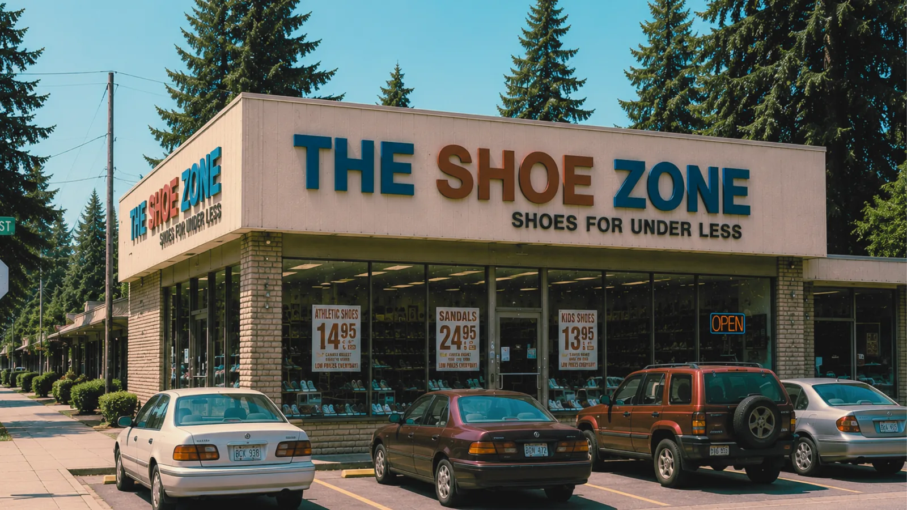
// the_shoe_zone_northplaza.png · The Shoe Zone · North Plaza
[ view full image ]
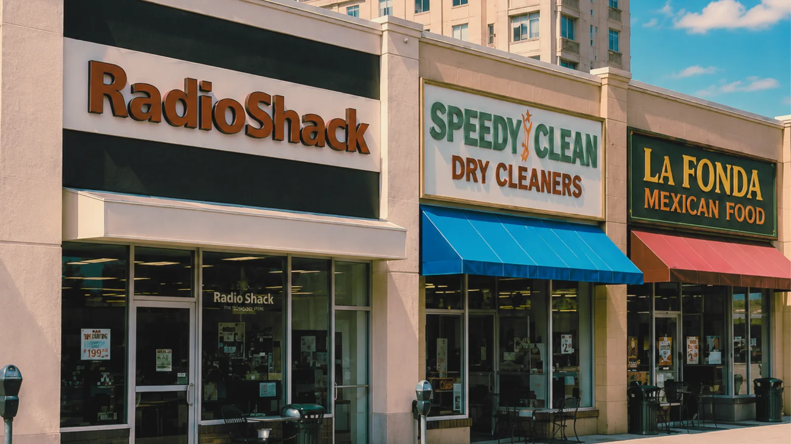
// radio_shack_northplaza.png · Radio Shack · electronics & components
[ view full image ]
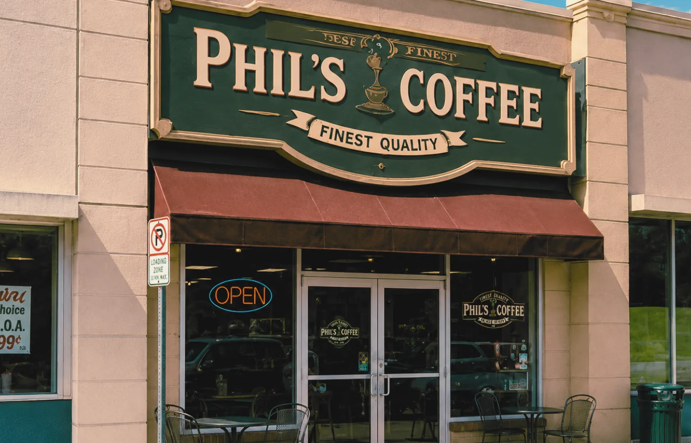
// phils_coffee_civic.png · Phil's Coffee · Civic Center Way
[ view full image ]
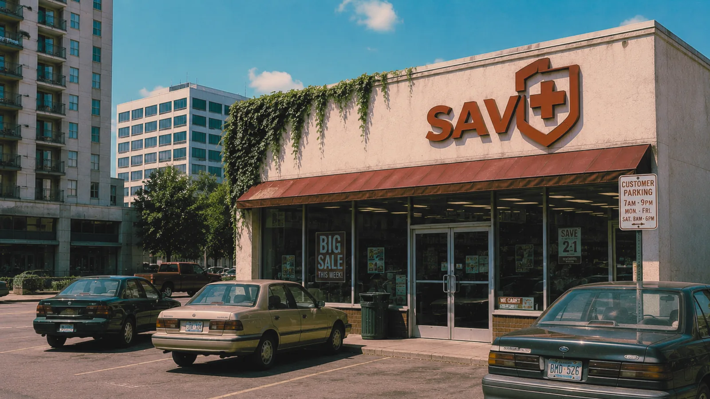
// savplus_eastplaza.png · SAV+ Discount · East Plaza
[ view full image ]
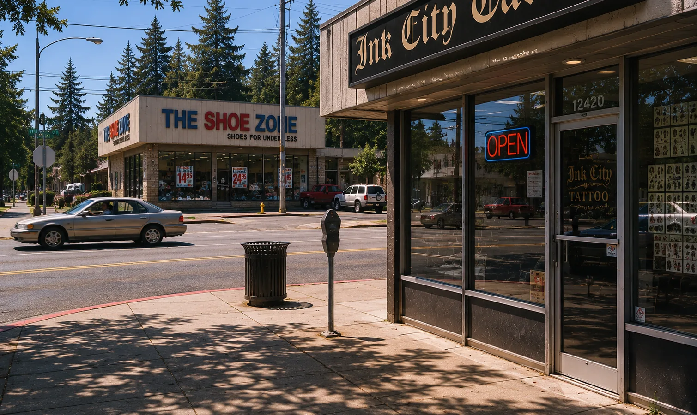
// electric_arts_tattoo.webp · Electric Arts Tattoo · 2nd Ave
[ view full image ]
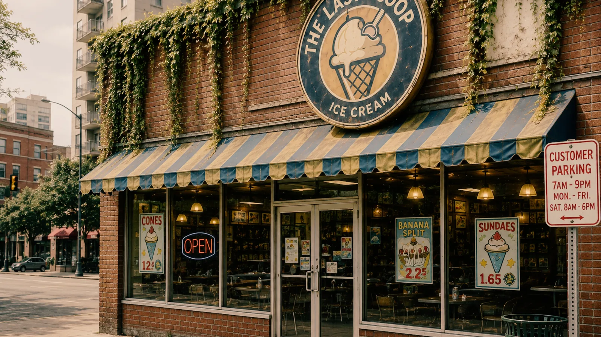
// scoops_ice_cream.png · Scoops Ice Cream · North Plaza
[ view full image ]

// burger_chef_online.png · Burger Chef Online · orders unavailable
[ view full image ]
// photo files for the directory were digitized by Megabyte Computers under contract with the Clerk. Date of digitization not confirmed. // three storefronts in the file no longer match the businesses on record.
| Business | Public Description | Archive Note |
|---|---|---|
| Shadewater Laboratories 1 Shadewater Access Rd |
Applied research and civic systems campus. Founded 1978. Civic partner for CityNet, Continuity Grid, and the 1993 Systems Conference. See profile. | Public tours suspended after 05/17/1993. Staff directory withdrawn at request. Service road map missing from B12. |
| Sezzler Hotel & Resort 1 Civic Center Way, downtown |
Lost Hills' conference and resort hotel. 312 rooms, conference halls, four restaurants. Host of the 1993 SASC. See profile. | Guest registry for May 1993 partially corrupted. Elevator maintenance log references floor B12. |
| Benthic Gas & Food Mart 2114 Catfish Lake Rd |
24-hour service station, lake permits, bait & tackle, hot food counter, payphone bank. | Payphones reported ringing without callers since 05/18/1993. Cashier complaint log withheld at request. |
| Northwestern Interstate Bank 21 East Plaza |
Regional bank, civic accounts, ATM modernization partner with Shadewater Labs. Lobby open M–F 09:00–16:30. | Two ATMs at North Plaza dispensed bills with serial numbers not issued by the U.S. Treasury (05/20/1993). Bills returned for verification. |
| Noise Records 8 North Plaza |
Independent record shop. New & used vinyl, cassettes, CDs, local artist consignments, listening booth. | Customers report voices audible beneath the music on several factory-sealed cassettes purchased after 05/17/1993. Owner offers refunds. |
| Summit Ski Shop 12 East Plaza |
Ski and outdoor gear, equipment rentals, regional trail maps, hiking and ski permits, guide services. | Regional maps printed after 05/19/1993 differ in lake-shore detail. Shop honors all printed permits. |
| Lost Hills Museum of Fine Art (MOFA) 4 Civic Center Way |
Regional art museum, civic arts programs, Shadewater-sponsored digital imaging exhibit. See profile. | Several digitized exhibit images display differently than the physical works. See "The Shape of Distance." |
| Woodchuck Inn 700 Old Mill Rd |
Family-run motel, 24 rooms, continental breakfast, AAA rated. Independent of Sezzler. | Guest in Room 7 reports same dream four nights running. Innkeeper requests removal of this note. |
| Catfish Lake Recreation Area south of city |
Municipal recreation, fishing, boating, picnic grounds, monitored swim area. Permits at Benthic. See profile. | Depth surveys exceed instrument range. Lights observed below surface 05/19–present. |
| Dum Dum's Donuts 3 North Plaza |
Family bakery since 1971. Glazed, cake, raised, fritters, cocoa, drip coffee. | Open 04:30 daily. No archive incidents on file. |
| Megabyte Computers 16 North Plaza |
Personal computers, modems, public access terminal program with the City of Lost Hills. | Customer reports a 14.4k modem dialing out by itself at 03:17 each night. Store has issued replacement. |
| Zevi 21 North Plaza |
Clothing and denim retail. Pacific Northwest outfitting, workwear, casual wear, boots. Established 1981. | Storefront photographed at North Plaza 05/19/1993; not present on 05/20. Photographer requests removal. |
| Silver Dream Theatre 5 East Plaza |
Two-screen cinema, marquee since 1959, Friday matinee discount. |